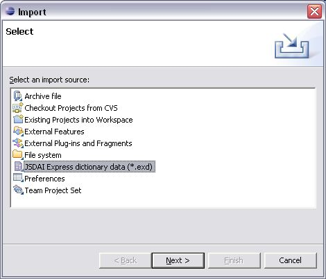

Follow the routine to import new or additional data from an applicable
EXPRESS repository (file) to the currently opened one:
First of all open an applicable express file (.exd
or .exg)
by clicking on the file name in the Navigator
panel.
Select the File --> Import
menu item form the main menu bar on the top section of the workbench.
Or
Right click in the Navigator panel
and select the Import menu
item from the context sensitive menu.
The Import wizard appears
(see Figure 3). Select the Data form EXPRESS
Repository item from the list and click the Next button.
 Figure 3. Import wizard window
Select an applicable repository (file) in your file system by
using the Browse button next
to the File field.
You can select the type of data to be imported by selecting check boxes
below the field (Dictionary data and/or Layout (EXPRESS-G) data) (see Figure
4).